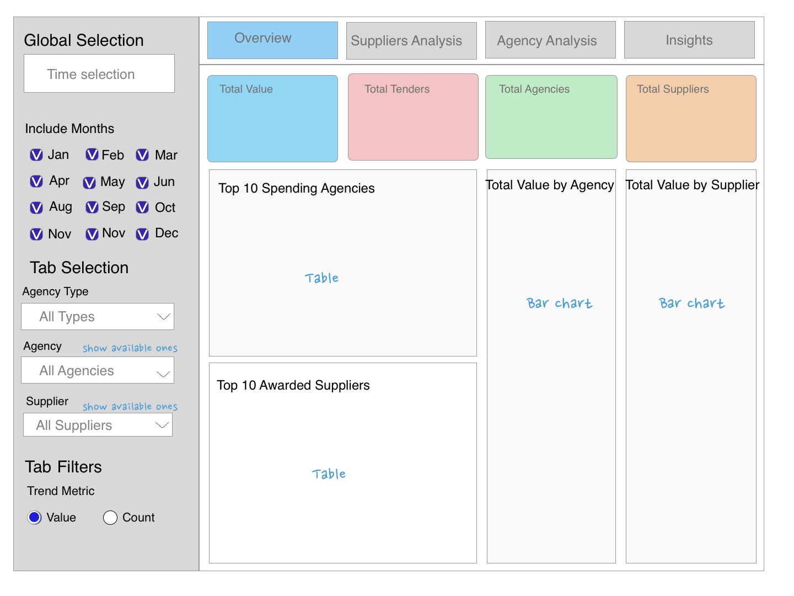
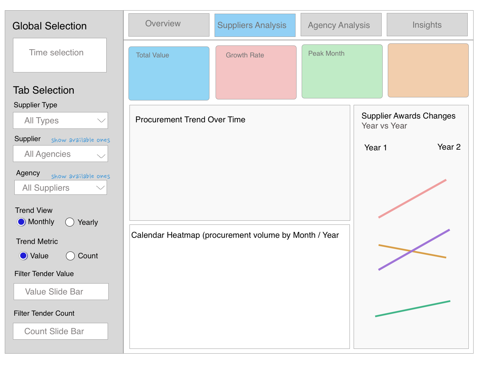
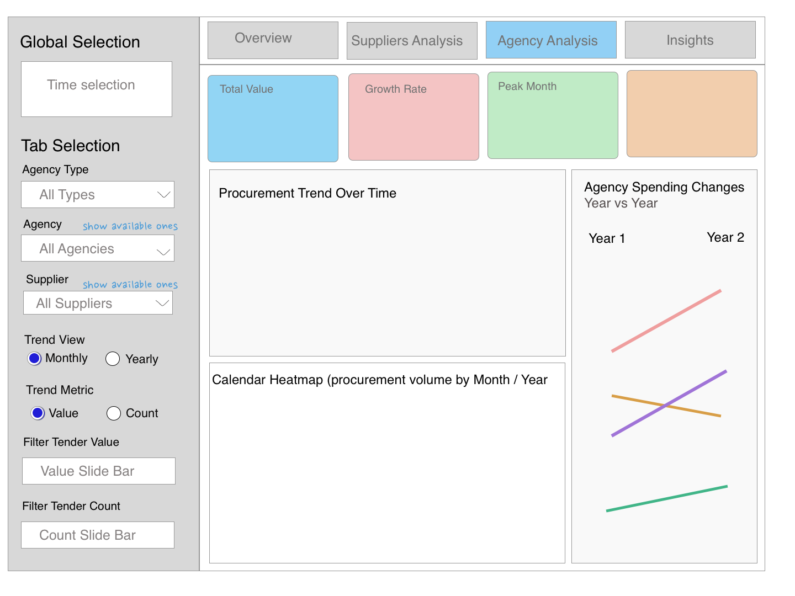
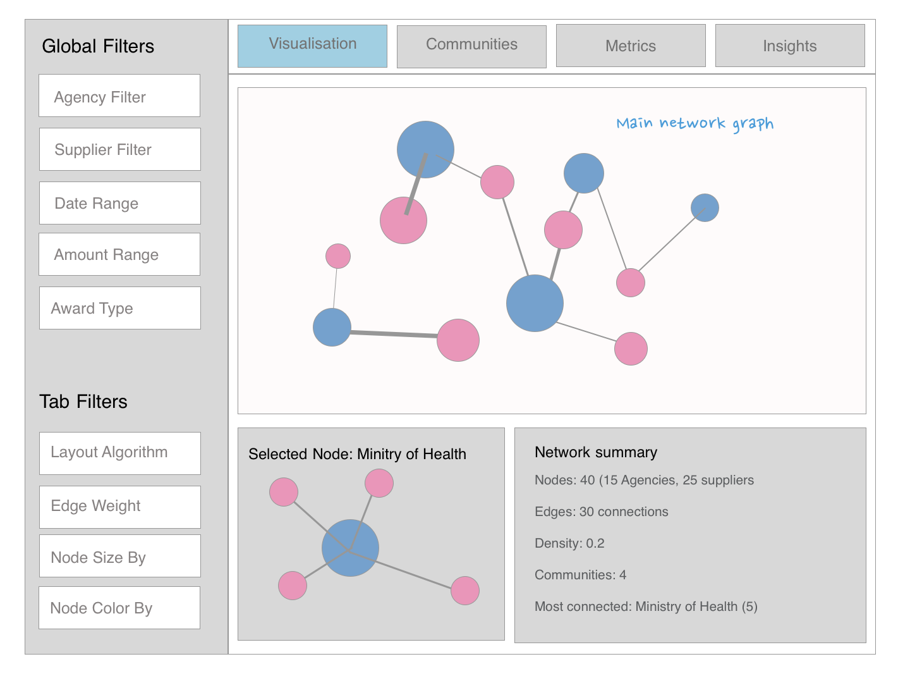
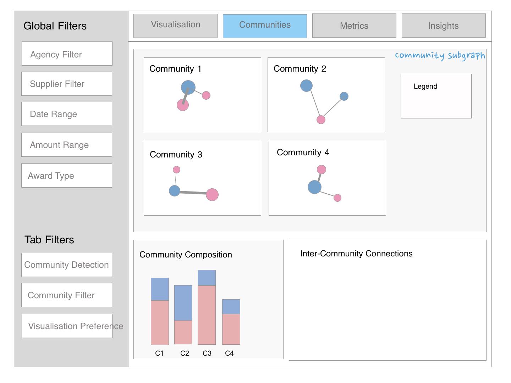
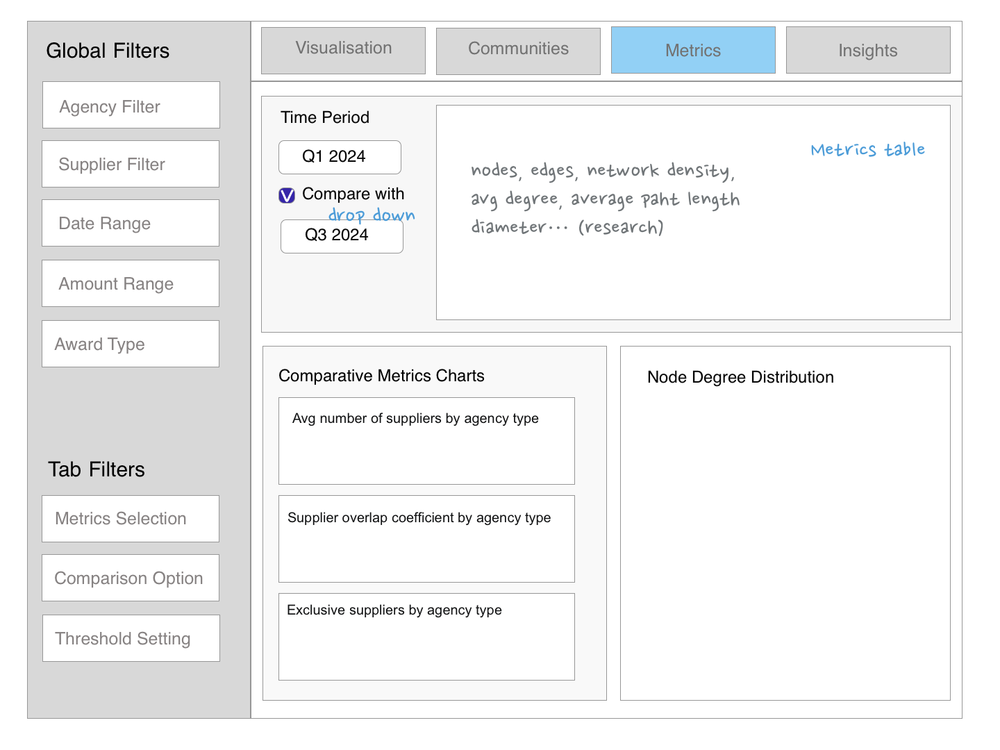
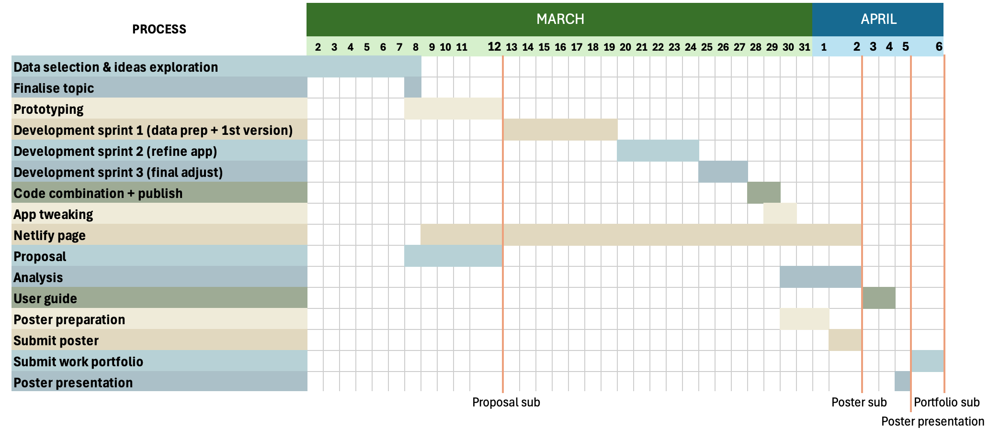

| tender_no | tender_description | agency | award_date | tender_detail_status | supplier_name | awarded_amt |
|---|---|---|---|---|---|---|
| ACR000ETT18300010 | SUPPLY, DESIGN, DEVELOPMENT, CUSTOMIZATION, DELIVERY, INSTALLATION, TESTING, COMMISSIONING AND MAINTENANCE OF A VARIABLE CAPITAL COMPANIES (VCC) SYSTEM FOR ACCOUNTING AND CORPORATE REGULARTORY AUTHORITY | Accounting And Corporate Regulatory Authority | 11/6/2019 | Awarded to Suppliers | AZAAS PTE. LTD. | 2305880 |
| ACR000ETT18300011 | APPLICATION ENHANCEMENT, CUSTOMISATION, MIGRATION, DELIVERY, INSTALLATION, TESTING AND COMMISSIONING OF THE FULLY OPERATIONAL BIZFINx 2.0 APPLICATION SYSTEM WITH AN OPTION FOR MAINTENANCE | Accounting And Corporate Regulatory Authority | 10/5/2019 | Awarded to No Suppliers | Unknown | 0 |
| ACR000ETT19300001 | PROVISION OF CONSULTANCY SERVICES FOR STRATEGIC BUSINESS PROCESSES RE-ENGINEERING (SBPR) AND ACRA’S IT INFRASTRUCTURE | Accounting And Corporate Regulatory Authority | 30/4/2019 | Awarded to Suppliers | ACCENTURE SG SERVICES PTE. LTD. | 2035000 |
| ACR000ETT19300002 | SUPPLY, DELIVERY, DESIGN, CUSTOMISATION, INSTALLATION, CONFIGURATION, TESTING, COMMISSIONING OF A FULLY OPERATIONAL BIZFILE+ WITH AN OPTION FOR MAINTENANCE | Accounting And Corporate Regulatory Authority | 29/8/2019 | Awarded to Suppliers | TECH MAHINDRA LIMITED (SINGAPORE BRANCH) | 30700374 |
| ACR000ETT19300003 | PROVISION OF MEDIA MONITORING SERVICES FOR A PERIOD OF TWO YEARS WITH OPTION TO EXTEND FOR UP TO ONE YEAR | Accounting And Corporate Regulatory Authority | 6/8/2019 | Awarded to Suppliers | INSIGHTMATRIX | 178800 |
| ACR000ETT19300004 | INVITATION TO TENDER FOR THE PROVISION OF CALL CENTRE SERVICES FOR ACCOUNTING AND CORPORATE REGULATORY AUTHORITY FOR A PERIOD OF 3 YEARS WITH OPTION OF UP TO 2 EXTENSIONS OF 2 YEARS EACH | Accounting And Corporate Regulatory Authority | 5/11/2019 | Awarded to Suppliers | TDCX (SG) PTE. LTD. | 8566831 |
Project Proposal
Lets’ Track Public Dollars! Unveiling the G2B Network from GeBiz
Motivation
Government procurement represents billions in public spending annually, directly impacting taxpayers and the business ecosystem. Despite initiatives like GeBIZ that ostensibly promote transparency, meaningful public oversight remains challenging. Our team’s experience attempting to analyze this data revealed significant barriers to understanding: scattered information across thousands of entries, complex relationships between agencies and suppliers, and limited tools to identify patterns or anomalies in spending.
Problem statement
While raw procurement data is technically “available,” several critical issues prevent it from being truly accessible:
Information Overload: The volume and complexity of government tender data overwhelm ordinary citizens.
Limited Visualization: Current platforms present data in tabular formats without meaningful visual representations of relationships or trends.
Hidden Patterns: Important insights about procurement patterns, supplier dominance, and potential inefficiencies remain buried in spreadsheets.
Accessibility Barriers: Technical knowledge requirements effectively restrict who can meaningfully engage with and interpret public spending information.
Proposed solution
To bridge this gap, our project “Let’s Track Public Dollars! Unveiling the G2B Network from GeBiz” aims to address these challenges by developing an intuitive Shiny dashboard that transforms complex procurement data into accessible and insightful visualizations.
The application will leverage:
Machine Learning-Based Tender Categorization: Uses text analysis to classify tenders via its description, enabling grouped analysis by category to reveal agency procurement trends and supplier market dominance.
Procurement Dashboard: Visualises procurement trends over time, revealing seasonal patterns, supplier shifts, and spending changes by tender type. It also analyzes market concentration and supplier dominance.
Network Analysis: Visualises agency-supplier relationships and identifies key players in procurement clusters. Features multiple filters by tender category, agencies, suppliers, and date ranges with highlights of top suppliers and agencies.
Through these visual analytics approaches, users will understand immediately:
- How government spending flows & distribution between agencies and suppliers
- Which suppliers dominate particular agency relationships
- How procurement patterns evolve over fiscal periods
- Where potential opportunities exist for new market entrants
- Whether procurement appears appropriately distributed or concentrated
Our solutions will empower citizens, businesses, and policymakers with the tool to understand government spending, and contracts without specialised technical knowledge. Ultimately we want to promote greater accountability by shedding light on procurement patterns, key suppliers, and competitive landscapes, as well as informed public resource allocation.
Data
GeBIZ (Government Electronic Business Platform), containing 18,638 entries from 2019 to 2023.
Methodology
The project will employ a modular data-driven approach to uncover insights from government procurement data using interactive dashboards, natural language processing (NLP), and network analysis techniques. By integrating advanced visualization and machine learning methods, the system will provide a comprehensive, transparent, and engaging analytical tool for public procurement monitoring. The planning modules include the following:
Module 1. Machine Learning Based Tender Classification
Module Owner: Chang Fang Yu
Core functionality:
This component aims to automatically categorize tenders by analyzing procurement descriptions using Natural Language Processing (NLP) and machine learning techniques. By implementing LDA topic modeling, TF-IDF-based text analysis, and a trained classification model, we can label tenders with meaningful categories. These labels will then be used for trend analysis, procurement pattern identification, and supplier-agency relationship insights.
Implement Components:
1. Data Preprocessing & Text Cleaning
- Objective: Prepare tender descriptions for accurate text analysis and machine learning classification.
2. LDA Topic Modeling & Tender Clustering
- Objective: Identify potential procurement categories based on tender descriptions.
3. Machine Learning Model Training & Tender Labeling
- Objective: Train a supervised learning model to automatically label tenders based on discovered categories.
Specific Insights:
Identifies key procurement categories: based on tender descriptions.
Improves supplier-agency analysis: by grouping tenders based on category labels.
Module 2. Procurement Dashboard
Core functionality:
The Procurement Dashboard is an interactive module providing real-time insights into procurement activities, supplier competition, and market dynamics. By leveraging advanced visualization, filtering, and anomaly detection, it offers a comprehensive and transparent view of procurement trends.
Implement components:
Time-Based Analysis Interactive time series charts with customisable periods, complemented by calendar heat maps that highlight seasonal patterns and procurement cycles.
Component Owner: Cathy CHU Shan-hui
Agency Explorer Dynamic visualisation of top agencies with comparison tools, featuring distribution views and timeline charts to track spending patterns across different government entities.
Component Owner: Cathy CHU Shan-hui
Supplier Analysis Comprehensive supplier metrics dashboard showing concentration statistics and temporal activity patterns to identify key vendors and their engagement over time.
Component Owner: Cathy CHU Shan-hui
Tender Analysis Tools for analysing tender value distribution by type, with capabilities to identify outliers and track frequency trends across the procurement landscape.
Component Owner: Chang Fang Yu
Interactive Controls Unified control panel with filters for date ranges, agencies, suppliers, tender types and award amounts.
Specific insights:
- Real-time Procurement Trends : Visualisation of temporal spending patterns including month-over-month changes, year-over-year comparisons, and identification of peak procurement periods tied to budget cycles.
- Agency-Level Procurement Analysis : Identification of top spending agencies with their specialization patterns. Enable comparative analysis to spot unusual procurement behaviors and spending anomalies.
- Supplier Market Presence : Track key suppliers, awarded contracts, and market concentration.
- Market Share & Competitive : Evaluate supplier dominance, competition, and procurement fairness across agencies.
Module 3. G2B Procurement Networks
Module Owner: Cathy CHU Shan-hui
Core functionality:
A network graph visualization will be developed to illustrate the relationships between government agencies and suppliers based on procurement transactions.
Implement components:
- Interactive network visualisation (core)
- Filtering and control panel (core)
- Network metrics dashboard (core)
- Community detection
- Entity focus view
Specific insights:
- Agency-supplier collaboration: which agencies work most frequently with specific suppliers
- Network centrality analysis: Identify central nodes in procurement networks
- Community detection: will reveal clusters of agencies and suppliers that frequently collaborate.
Prototype
To update



Network visualisation 
Community detection 
Network metrics

Timeline
